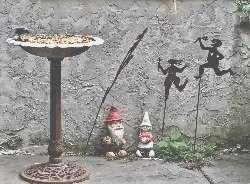

“I feel good.”
Quietly. They don’t want to confess it out loud.
“I know I shouldn’t in these terrible times but…”
What they don’t realize is how many of them there are.
A whole lot of people are content. A whole lot of people have discovered a kind of peace in the midst of a terrifying pandemic.
Dare we say it? They're... happy.
But people are dying. How can anyone feel good?
And if we can get over the judgments (“What kind of sociopath feels good now?”),
We might notice the subtle but absolute demand that everyone must suffer if anyone does.
We might notice that, when pain exists anywhere, we think it is wrong and inappropriate for anyone to feel good.
Even though so many do.
When it could be that feeling content right now actually makes sense.
I mean, get past the guilt of feeling lighter, and we can start to see that we’ve been given a no-choice, long-overdue, break.
Key words being “no-choice”. It's no-fault downtime.
Suddenly we’re allowed to be unsocial without having to make up lies for not wanting to go out. Suddenly we’re allowed to not work without being labeled as failures. We’re allowed to not get things done, to not use our time "wisely."
Suddenly, perhaps for the first time ever, we have permission, hell we're even required, to be quiet, alone, and unproductive.
And it’s not even our fault!
This is not typical.
Since ordinarily the mind loves to blame us for happenings, for outcomes, for causing pain. It tells us we are mighty in our power to screw up absolutely everything.
And this power, this supposed responsibility to control, conveniently makes everything about the self, the Me. Me is at the center of every situation. “I brought this on, I did this wrong or right, I deserve this outcome.”
Me did this.
Through guilt, blame, responsibility, and punishment, the self firms up its sense of importance and reality.
And now that can't happen. Try as it might- and oh it does- the mind can’t make a global pandemic our fault.
So a key bit of self-reification is relaxed. Which feels odd. Strangely calm.
Since the stronger the sense of, “This is me, I am here,” the more suffering. Relax that, and ahhhhh, blessed relief.
Plus, we’re not alone in this. Everyone has company in this isolation. Everyone is in the same boat.
Which reveals a kind of connection to others, to earth, to the everything, that in usual daily life gets lost in the certainty of separateness and individuality.
That's a reluctant, not even-trying, additional bit of relaxation of the sense of distinct, personal, self.
It feels good.
Now of course not everything’s perfect. If it isn’t family driving us nuts, it’s the isolation of living alone, or it’s money, or physical health, or concern for loved ones not isolating in the same home as we are.
And of course the mind is never silent. It simply moves its scolding to making “good use” of the downtime, coming up with new reasons for blame and guilt, as its demands for us to be productive, lose weight, get fit, learn a language or whatever, fail to materialize.
Bad us. Bad weight-up, fitness-disappearing, indulging-too-much and getting-nothing-done, us.
So clearly this new contentment isn’t about affirmations or Pollyanna positivity.
It's more about being allowed to feel good, even if not everyone does.
Because one person’s contentment doesn’t negate or discount anyone else’s pain. So why would that pain be expected to nullify another’s happiness?
Besides, it could be we are capable of feeling compassion for others, empathy for their pain, and also our own contentment. It could be we can encompass both, not just one or the other.
And it could be peace and contentment do have a place, even if bad things are happening.
Maybe there's room for all experiences in this world.
Who knows, we may discover that we can derive that all-important sense of self we are so attached to, out of good feelings too, not just out of bad ones.
That would be the ultimate in self-ish.
As in, self-like. As in, similar to self.
That would make quite a gift out of the pain of this pandemic.
I mean, wouldn’t it be something if,
out of that pain,
we found
peace?
Get your every week.
"Ever since happiness heard your name, it has been running through the streets trying to find you.” --Hafiz
